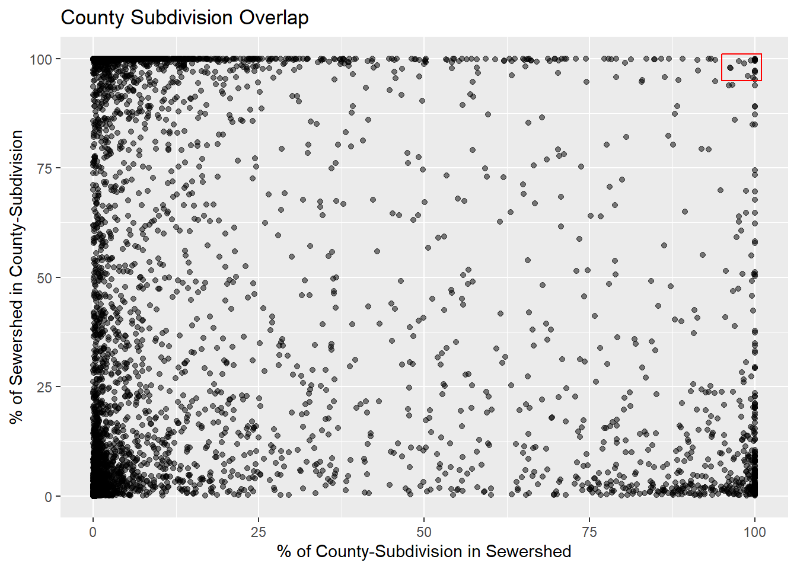

This document serves as an outline for all analysis and step documentation for modeling sewershed boundaries. You may need to refer to other documents for more specific information relating to specific steps, which will be noted where applicable.
Endpoints
Endpoints, which are generally wastewater treatment plants, are the point of convergence for all wastewater collected within a ‘sewershed’. Our goal is to estimate the spatial area that contributes to these endpoints. Endpoint locations are obtained from the Clean Watersheds Needs Survey (CWNS) (2022).
Defining the Universe of Endpoints
Notes:
NOT safe to assume all rows in facilities_confirmed are all end point
YES safe to assume all rows in population_confirmed are endpoints
REMOVE CHANGE_TYPE == “New”
Total receiving population = total number of people the facility is receiving from, regardless of whether its sent on elsewhere
Not all records within the CWNS represent endpoints for wastewater collection. The first step in our modeling effort is to establish the universe of systems. To do this, we use the following criteria to select locations:
Publicly owned treatment works
POTWs that treat human waste (as opposed to wet weather facilities)
Total receiving population > 0
facility type contains “treatment plant”
Residential population > 0
Percent of Discharge is set to be < 50% (This value can be changed)
The CWNS data we are working with was received as a Microsoft Access Database, which is located in ‘Data/CWNS 2022 Database_April2024.accdb’. We use 7 tables from this access database. Note that ‘POPULATION_WASTEWATER_CONFIRMED’ was manually updated by ERG in June, 2024 and does not reflect original data in the access database. Each table was exported from Access to a comma delimited file. The seven files used are:
The following steps describe the process used to query endpoints to be included in modeling efforts. The code can also be viewed in the expandable code tab.
We create a flat file where each row represents a facility and perform the followng steps: - In ‘POPULATION_WASTEWATER”, if no value is given for the column ’END_FACILITY’, we assign it “N”, meaning it is not considered an end facility. - ‘END_FACILITY’ and ‘FACILITY_TYPE’ columns for the ‘FACILITIES_CONFIRMED’ file are set to ‘Y’ and ‘Treatment Plant’ respectively. - Discharge is calculated using the ‘DISCHARGES’ file. Because systems can discharge to multiple other systems, we calculate the sum of discharges to determine the total % discharged elsewhere. If discharge is not reported for a system, we default the value to zero. - Data tables are combined and the filter is applied:
In total, we started with 54,738 rows of data, which were queried down to a universe of 17,272 individual treatment plants to be included in the modeling efforts.
Show Code
# Import CWNS data and create a flat file## Load facilitiesfac <-vroom(here("Data/FACILITIES.txt"), show_col_types =FALSE)%>%select(CWNS_ID,FACILITY_ID,STATE_CODE,INFRASTRUCTURE_TYPE,FACILITY_NAME)## Load population servedpop <-vroom(here("Data/POPULATION_WASTEWATER.txt"), show_col_types =FALSE)%>%select(CWNS_ID,FACILITY_ID,POPULATION_TYPE,RESIDENTIAL_POP_2022, NONRESIDENTIAL_POP_2022,TOTAL_RES_POPULATION_2022,TOTAL_NONRES_POPULATION_2022, PART_OF_SEWERSHED,END_FACILITY)%>%mutate(END_FACILITY =if_else(is.na(END_FACILITY),"N",END_FACILITY))## Load facility typesfac.types <-vroom(here("data/FACILITY_TYPES.txt"), show_col_types =FALSE)%>%select(CWNS_ID,FACILITY_ID,FACILITY_TYPE)## Load facility locationsfac.locs <-vroom(here("data/PHYSICAL_LOCATION.txt"), show_col_types =FALSE)%>%select(!STATE_CODE)## Join population, location and types to facilitiesdf.1<- fac%>%left_join(pop, by =c("CWNS_ID","FACILITY_ID"))%>%left_join(fac.locs, by =c("CWNS_ID","FACILITY_ID"))%>%left_join(fac.types, by =c("CWNS_ID","FACILITY_ID"))# Data captured after CWNSfac.cf <-vroom(here("data/FACILITIES_CONFIRMED.txt"), show_col_types =FALSE)%>%select(CWNS_ID,FACILITY_ID,STATE_CODE,INFRASTRUCTURE_TYPE,FACILITY_NAME)# ERG went back and fixed many missing or incorrect locations.pop.cf <-vroom(here("data/POPULATION_WASTEWATER_CONFIRMED_updated06242024.csv"), show_col_types =FALSE)%>%mutate(ZIP_CODE =substr(ZIP_CODE,1,5))%>%select(!c(STATE_CODE,INFRASTRUCTURE_TYPE))# new.sf <- pop.cf%>%# select(CWNS_ID,FACILITY_TYPE,TOTAL_RES_POPULATION_2022,LOCATION_TYPE,LATITUDE,LONGITUDE)%>%# st_as_sf(coords = c("LONGITUDE","LATITUDE"), crs = st_crs(4269))# colnames(new.sf) <- c("CWNSID","FacType","Population","LocType","geometry")# st_write(new.sf,"D:/temp/Confirmed_New.gpkg", layer = "New", append = FALSE)# There is only one row for each CWNS_ID in this data, and it is assumed they are all treatment plants / endpointsdf.2<- fac.cf%>%left_join(pop.cf,by =c("CWNS_ID","FACILITY_ID"))%>%mutate(FACILITY_TYPE ="Treatment Plant",END_FACILITY ="Y")df.bind <-bind_rows(df.1,df.2)%>%distinct()discharge <-vroom(here("Data/DISCHARGES.csv"), col_names =c("CWNS_ID","FACILITY_ID","STATE_CODE","DISCHARGE_TYPE","PRESENT_DISCHARGE_PERCENTAGE","PROJECTED_DISCHARGE_PERCENT","DISCHARGES_TO_CWNSID","DISCHARGES_NOTES"))%>%select(CWNS_ID,DISCHARGE_TYPE,PRESENT_DISCHARGE_PERCENTAGE)%>%group_by(CWNS_ID)%>%mutate(PRESENT_DISCHARGE_PERCENTAGE =sum(PRESENT_DISCHARGE_PERCENTAGE,na.rm =TRUE))%>%ungroup()%>%distinct()# First cuttreatment.end <- df.bind%>%left_join(discharge)%>%filter(TOTAL_RES_POPULATION_2022 >0& FACILITY_TYPE=="Treatment Plant")%>%mutate(PRESENT_DISCHARGE_PERCENTAGE =replace_na(PRESENT_DISCHARGE_PERCENTAGE,0))%>%mutate(drop =ifelse(DISCHARGE_TYPE =="Discharge To Another Facility"& PRESENT_DISCHARGE_PERCENTAGE >50, TRUE,FALSE))%>%filter(drop ==FALSE)%>%select(!DISCHARGE_TYPE)%>%distinct()sf <- treatment.end%>%drop_na(LATITUDE, LONGITUDE)%>%st_as_sf(coords =c("LONGITUDE","LATITUDE"), crs =4269)st_write(sf, here("Data/endpoints.gpkg"), layer ="Endpoints_LT50PCT_Q", append =FALSE)
Validation Data (Public Sewershed Data)
The model will use boundaries from a variety of sources to train and test on. It is critical that we use accurate data for this, otherwise the model will reflect incorrect relationships. This section details the data we have and defines the areas we will use for model creation. For the model, areas that are not served by sewer systems are equally important. For model training, we want areas that we know are not served by sewer systems, as well as areas where we know the exact extents of specific sewer systems. Before we review whether boundaries are accurate or not, we need to first determine how many systems are missing boundaries from the dataset we have.
Joining CWNS IDs to sewershed data.
There is no universal identifier to match data from the CWNS with state provided or otherwise obtained sewershed boundaries. Therefore, we need to match the boundaries with the CWNS IDs that are associated with our data. We do this both spatially and with text matching.
First, an overview of the boundary data we have:
Show Code
swr.files <-data.frame(path =list.files(here("Data/State_Provided_Data"), full.names =TRUE, pattern =".shp$"),file =list.files(here("Data/State_Provided_Data"), full.names =FALSE, pattern =".shp$"))%>%separate(file, into =c("State","B"), sep ="_", extra ="drop")%>%select(!B)%>%mutate(State =ifelse(State =="West","WestVirginia",State))# Count features and fieldsstate.ff <-data.frame()for(n in1:nrow(swr.files)){ sf.temp <-st_read(swr.files$path[n], quiet =TRUE) newRow <-data.frame(State = swr.files$State[n],Features =nrow(sf.temp),Fields =ncol(sf.temp),CRS =st_crs(sf.temp)$input) state.ff <-rbind(state.ff,newRow)}state.ff
We have a variety of data from several states that we need to check against the CWNS data. We start by extracting each boundary from the data we have and determining the utility name field (if one exists). Some states have multiple polygons/rows that belong to the same system while others have all polygons for a system condensed into a single row / multipolygon. We need to identify any polygons that can be condensed into a single row to the best of our ability. We then have a single spatial dataset where each row refers to a boundary, and the utility names are in a single column. In total, we have 23,419 polygons across 10 states.
Connecticut
Connecticut has one name field: “TREATMENTFACILITY- This field represents the sewer service treatment facility (endpoint) that processes the waste for each municipality. For municipalities without sewers, “Not Applicable” is the designated value.” Source. Connecticut data is in multipolygon format already but has duplicate endpoint facility values. Therefore, we need to condense these multipolygons based on the treatment facility.
Maryland
We don’t seem to have very good metadata for Maryland, but we see that they have several classifications for their polygons, including planned areas and areas for other use types. There is also a ‘WWTP_SHED’ field, which we take to indicate the treatment plant that the polygon flows to. We filter using DEF_A == 'EXISTING SERVICE AREA' and then merge rows based on the treatment plant field.
New Hampshire
New Hampshire provided buffered sewer lines, which have a system name column. These polygons are merged based on this name field.
New York
New York has two separate name columns: ‘WWTP’ and ‘Sewershed’. Since the CWNS uses treatment plants, that is the field we use to aggreagate polygons.
New Jersey
New Jersey has several name fields. Some searching around indicates that the ‘WMP’ field seems to be associated with the treatment facility. This is used to aggregate rows.
Rhode Island
Rhode island data does not have any associated utility information, so may be difficult to have confidence in any matching.
Show Code
# Connecticutct <-st_read(here("Data/State_Provided_Data/CONNECTICUT_statedata_publiconline_sewersheds.shp"), quiet =TRUE)%>%st_transform(4269)%>%st_make_valid()%>%group_by(TreatmentF)%>%summarise()%>%mutate(State ="CT",ID =paste0("CT-",rownames(.)))%>%select(State,ID,TreatmentF)%>%setNames(c("State","ID","Name","geometry"))st_make_valid()# Marylandmd <-st_read(here("Data/State_Provided_Data/MARYLAND_statedata_sewersheds.shp"))%>%filter(DEF_A =="EXISTING SERVICE AREA")%>%st_transform(4269)%>%st_make_valid()%>%mutate(WWTP_SHED =replace_na(WWTP_SHED,"UNKNOWN"))%>%group_by(WWTP_SHED)%>%summarise()%>%mutate(State ="MD",ID =paste0("MD-",rownames(.)))%>%select(State,ID,WWTP_SHED)%>%setNames(c("State","ID","Name","geometry"))# New Hampshirenh <-st_read("D:/Github/Sewersheds/Data/State_Provided_Data/New Hampshire/Other_Data/Sewer_Lines_Buffer_Archive.shp")%>%st_transform(st_crs(4269))%>%st_make_valid()%>%group_by(SYS_NAME)%>%summarise()%>%st_make_valid()%>%mutate(State ="NH",ID =paste0("NH-",rownames(.)))%>%select(State,ID,SYS_NAME)%>%setNames(c("State","ID","Name","geometry"))# New Yorkny <-st_read(here("Data/State_Provided_Data/NEW YORK_statedata_publiconline_sewersheds.shp"))%>%st_transform(4269)%>%st_make_valid()%>%group_by(WWTP)%>%summarise()%>%mutate(State ="NY",ID =paste0("NY-",rownames(.)))%>%select(State,ID,WWTP)%>%setNames(c("State","ID","Name","geometry"))# New Jerseynj <-st_read(here("Data/State_Provided_Data/NEWJERSEY_statedata_publiconline_sewersheds.shp"))%>%st_transform(st_crs(4269))%>%st_make_valid()%>%group_by(WMP)%>%summarise()%>%st_make_valid()%>%mutate(State ="NJ",ID =paste0("NJ-",rownames(.)))%>%select(State,ID,WMP)%>%setNames(c("State","ID","Name","geometry"))# North Carolinanc <-st_read(here("Data/State_Provided_Data/NORTHCAROLINA_statedata_publiconline_sewersheds.shp"))%>%st_transform(st_crs(4269))%>%st_make_valid()%>%group_by(sssyname)%>%summarise()%>%st_make_valid()%>%mutate(State ="NC",ID =paste0("NC-",rownames(.)))%>%select(State,ID,sssyname)%>%setNames(c("State","ID","Name","geometry"))# Rhode Islandri <-st_read(here("Data/State_Provided_Data/RHODEISLAND_statedata_publiconline_sewersheds.shp"))%>%mutate(State ="RI",ID =paste0("RI-",rownames(.)))%>%select(State,ID)%>%st_transform(4269)%>%st_make_valid()# Texastx <-st_read(here("Data/State_Provided_Data/TEXAS_CCN_SEWER_TSMS.shp"))%>%st_transform(st_crs(4269))%>%st_make_valid()%>%group_by(UTILITY)%>%summarise()%>%st_make_valid()%>%mutate(State ="TX",ID =paste0("TX-",rownames(.)))%>%select(State,ID,UTILITY)%>%setNames(c("State","ID","Name","geometry"))# Vermontvt <-st_read(here("Data/State_Provided_Data/VERMONT_statedata_publiconline_sewersheds.shp"))%>%st_transform(st_crs(4269))%>%st_make_valid()%>%group_by(sSYSNAME)%>%summarise()%>%st_make_valid()%>%mutate(State ="VT", ID =paste0("VT-",rownames(.)))%>%select(State,ID,sSYSNAME)%>%setNames(c("State","ID","Name","geometry"))# West Virginiawv <-st_read(here("Data/State_Provided_Data/West_Virginia.shp"))%>%st_transform(st_crs(4269))%>%st_make_valid()%>%group_by(Utility)%>%summarise()%>%st_make_valid()%>%mutate(State ="WV", ID =paste0("WV-",rownames(.)))%>%select(State,ID,Utility)%>%setNames(c("State","ID","Name","geometry"))# Combine and project to albers equal areaswr.st <- ct%>%bind_rows(md,nh,ny,nj,nc,ri,tx,vt,wv)%>%select(State,ID,Name)%>%st_transform(st_crs(5070))%>%st_make_valid()%>%mutate(Swr_Area =as.numeric(st_area(.))/1000000)geo.check <-as.data.frame(table(st_geometry_type(swr.st)))%>%filter(Freq >0)
Appending Spatial Data to Sewershed Boundaries
The next step is to append other geographic data to these boundaries. We’ll use a few different geographic units available from the census to give us a few fields to perform name matching to the CWNS. We’ll also calculate a couple of spatial metrics to try to understand the level of detail of the boundaries. Many of these systems are broken into polygons already.
Place Name
Sub-County Name
County Name
Area Metrics for intersections
Number of Polygons per system
Number of Vertices divided by boundary length
We convert the polygons to multi-linestrings and calculate the overall distance, then convert those multi-linestrings to points and divide the number of vertices by overall length (in kilometers).
# County subdivisions must be looped, as we can only pull one state at a timeswr.st.cntySub <-data.frame()for(st inunique(swr.st$State)){ st.filt <- swr.st%>%filter(State == st) county.subs <- tigris::county_subdivisions(state = st)%>%st_transform(st_crs(5070))%>%st_make_valid()%>%mutate(Cnty_Sub_Area = ALAND/1000000)%>%select(STATEFP,COUNTYFP,GEOID,NAME,Cnty_Sub_Area)colnames(county.subs)[3:4] <-c("GEOID_Cnty_Sub","Cnty_Sub_Name") swr.st.cntysub.filt <-st_intersection(st.filt,county.subs)%>%mutate(Cnty_Sub_Intrsct_Area =as.numeric(st_area(.))/1000000)%>%st_drop_geometry()%>%mutate(Pct_CS_in_S =100*(Cnty_Sub_Intrsct_Area/Cnty_Sub_Area),Pct_S_in_CS =100*(Cnty_Sub_Intrsct_Area/Swr_Area))%>%select(ID,Name,STATEFP,COUNTYFP,GEOID_Cnty_Sub,Cnty_Sub_Name,Cnty_Sub_Area, Cnty_Sub_Intrsct_Area,Pct_CS_in_S,Pct_S_in_CS) swr.st.cntySub <-rbind(swr.st.cntySub,swr.st.cntysub.filt)}
Detail Metrics
The number of polygons is a bit tricky. In some cases systems are combined into multipolygons whereas in other cases, the same system may be broken into separate rows for each polygon of the same system. For now, we’ll break multipolygons into polygons and re-aggregate everything by system name.
Show Code
# Combine polygonspolygons <- swr.st%>%st_cast("MULTIPOLYGON")%>%st_cast("POLYGON")# Count polygonspoly.count <- polygons%>%st_drop_geometry()%>%group_by(Name)%>%summarise(State = State[1],nParts =n())# Cast to lines and sum lengthss.lines <- polygons%>%st_cast("MULTILINESTRING")%>%# Equidistant projectionst_transform(st_crs("ESRI:53027"))%>%mutate(Length =as.numeric(st_length(.)))bndry.length <- ss.lines%>%st_drop_geometry()%>%group_by(ID)%>%summarise(Length_Km =sum(Length)/1000)# Cast to points and count number of verticesss.pts <- ss.lines%>%st_cast("MULTIPOINT")%>%st_cast("POINT")%>%st_drop_geometry()%>%group_by(ID)%>%summarise(Vertices =n())# Compile descriptive dataset of sewershedsss.all <- swr.st%>%left_join(ss.pts)%>%left_join(bndry.length)%>%left_join(poly.count)%>%mutate(Pts_Km = Vertices/Length_Km)%>%st_transform(st_crs(4326))%>%st_make_valid()st_write(ss.all, here("Data/Validation/State_Sewersheds.gpkg"),layer ="Name_Combined_Sewersheds")# Export related tabler.df <- ss.all%>%st_drop_geometry()%>%select(!Name)%>%left_join(swr.st.cntySub)%>%select(!Name)%>%left_join(swr.st.place)vroom_write(r.df,here("Data/Validation/Name_Combined_Related_Stats1.csv"), delim =",", append =FALSE)
Breakdown of Detail Findings
After the data cleaning, we have 2,869 unique sewersheds.
Show Code
ggplot(ss.all)+geom_histogram(aes(x = State), stat ="count", color ="black", fill ="#a04bb8")+labs(title ="Count of State Sewersheds", x ="", y ="# of Systems")
Number of Disconnected Polygons
This plot shows a histogram of how many disconnected parts each system has. The vast majority of systems are interconnected, which is what we would expect.
Show Code
ggplot(ss.all)+geom_histogram(aes(x = nParts), binwidth =1, fill ="#45abbf", color ="black")+coord_cartesian(xlim =c(0,25))+labs(title ="Count of Disconnected Areas",subtitle ="(State Sewersheds)", x ="# of Polygons", y ="# of Systems")
Boundary Detail
For each boundary, we calculated the number of vertices per kilometer of boundary. This can give us an indication of how detailed a boundary was created. We must use caution here however, because if a system boundary is identical to an administrative boundary, then we are only reviewing the level of detail of the administrative boundary. We can contextualize this problem by looking at administrative boundary overlap, which we do next.
Summary Statistics for \({Vertices/kilometer}\):
Show Code
summary(ss.all$Pts_Km)
Min. 1st Qu. Median Mean 3rd Qu. Max.
0.0693 6.7866 18.0990 32.2764 44.5000 590.1193
Show Code
ggplot(ss.all)+geom_histogram(aes(x = Pts_Km), fill ="#63a843", color ="black")+labs(title ="Level of Boundary Detail", x ="Vertices / Kilometer", y ="# of Systems")
Administrative Overlap
There are likely cases where sewersheds are in fact identical or very similar to administrative boundaries, such as a city or a town. However, we would hope to see more detail than an entire administrative boundary. For example, there are areas in almost every city or town that have no infrastructure at all, like farmland or undeveloped area. We intersected these state-sourced boundaries with county subdivisions and also with census places. We calculated the % of a boundary that is within these administrative boundaries and conversely, the % of the administrative boundaries within the sewersheds. If both of these values are close to 100%, then both boundaries are essentially identical.
County Sub-Divisions The plot below shows a comparison of these areas, with the red box in the top-right illustrating sewersheds that are essentially identical to a county subdivision. Within that red box are 17 sewersheds (0.6% of systems)
Show Code
cs.ident <- r.df%>%filter(Cnty_Sub_Area>0)%>%select(State,ID,Pct_CS_in_S,Pct_S_in_CS)%>%distinct()%>%mutate(Pct_CS_in_S =ifelse(Pct_CS_in_S>100,100,Pct_CS_in_S),Pct_S_in_CS =ifelse(Pct_S_in_CS>100,100,Pct_S_in_CS))ggplot(cs.ident)+geom_point(aes(x = Pct_CS_in_S, y = Pct_S_in_CS), alpha =0.5)+geom_rect(xmin =95, xmax=101, ymin=95, ymax =101, color ="red", fill =NA)+labs(title ="County Subdivision Overlap", x ="% of County-Subdivision in Sewershed",y ="% of Sewershed in County-Subdivision")

Census Places The plot below shows the same comparrison for census places. There are 106 sewersheds (3.7%) that have greater than 95% overlap with an intersecting census place.
Show Code
place.ident <- r.df%>%filter(Place_Area>0)%>%select(State,ID,Pct_Place_in_S,Pct_S_in_Place)%>%distinct()%>%mutate(Pct_Place_in_S =ifelse(Pct_Place_in_S>100,100,Pct_Place_in_S))ggplot(place.ident)+geom_point(aes(x = Pct_Place_in_S, y = Pct_S_in_Place), alpha =0.5)+geom_rect(xmin =95, xmax=101, ymin=95, ymax =101, color ="red", fill =NA)+labs(title ="Census Place Overlap", x ="% of Census Place in Sewershed",y ="% of Sewershed in Census Place")
In total, it seems as if the sewershed boundaries we have are largely not administrative boundaries. With respect to the other metrics we developed, we will need to do some deeper investigating using visual inspection to determine what constitutes a detailed boundary.
Joining Validation Boundaries to CWNS Locations
Now that we have a set of boundaries that refer to treatment systems, we need to compare the locations to the data we have from the CWNS. Here we investigate:
How many systems do we have boundaries for?
How well do treatment plants match up to these boundaries?
Are there more than one treatment plant within any boundaries?
Are some treatment plants outside of the boundaries?
How well do the names match between the state datasets and the CWNS?
Show Code
ep <-st_read(here("Data/endpoints.gpkg"), layer ="Endpoints_LT50PCT_Q", quiet =TRUE)%>%select(CWNS_ID,FACILITY_NAME,STATE_CODE,RESIDENTIAL_POP_2022, TOTAL_RES_POPULATION_2022)%>%filter(STATE_CODE %in% ss.all$State)%>%st_transform(st_crs(ss.all))ep.intrsct <-st_intersection(ep,ss.all)intrsct.df <- ep.intrsct%>%st_drop_geometry()# Save intersectionvroom_write(intrsct.df,here("Data/Validation/CWNS_Intersection.csv"), delim =",")# Save list of validation endpointsst_write(ep,here("Data/Validation/Validation.gpkg"),layer ="endpoints")
Number of Systems by State in CWNS
As a starting point, we need to compare the number of system boundaries we have for each state with the number of systems the CWNS lists in each state. In this plot, we would expect (hope) to have about the same number of each, or perhaps almost as many state boundaries as CWNS systems. There are 4 states, however, that have more state boundaries than CWNS systems. This could indicate a problem with how we aggregated the boundaries.
Reading layer `endpoints' from data source
`D:\Github\Sewersheds\Data\Validation\Validation.gpkg' using driver `GPKG'
Simple feature collection with 3253 features and 5 fields
Geometry type: POINT
Dimension: XY
Bounding box: xmin: -106.6111 ymin: 25.89772 xmax: -70.7403 ymax: 45.0498
Geodetic CRS: WGS 84
Show Code
# Count of endpoints by statestate.ep <- ep%>%st_drop_geometry()%>%group_by(STATE_CODE)%>%summarise(nSystems =n())# Count boundaries by statestate.ss.counts <- ss.all%>%st_drop_geometry()%>%group_by(State)%>%summarise(Boundaries =n())count.compare <- state.ep%>%left_join(state.ss.counts, by =c("STATE_CODE"="State"))ggplot(count.compare)+geom_col(aes(x = nSystems, y = STATE_CODE, fill ="CWNS"), width =0.2, just =0)+geom_col(aes(x = Boundaries, y = STATE_CODE, fill ="State Boundaries"), width =0.2, just =1)+scale_fill_manual(values =c("CWNS"="#3bd4ba","State Boundaries"="#bf6a39"))+labs(title ="CWNS vs. State Boundary Counts", x ="# of Systems", y ="State", fill ="")
System Matching Classification
For each CWNS endpoint, we determine if it:
intersected no boundary (0)
intersected a single boundary (1)
intersected multiple boundaries (2)
The results of this are plotted below and show that many endpoints do not intersect any state boundaries. In this case, we need to conduct further analysis to include a distance buffer for boundaries with no intersecting endpoint.2
To train the model, we need validation data. The validation data we use will dictate how the model behaves and ultimately how well it performs. It is important to remember that knowing where areas are not served by wastewater collection systems is just as important as knowing where areas are served. Therefore, we cannot use a an entire state for validation if it is missing a lot of service boundaries. In order to maximize our training set however, we can look at county level data. Our validation data will be composed of counties that have complete and accurate sewershed boundaries. To determine the universe of sewersheds for each county, we execute a spatial join between the endpoints from the CWNS and a county spatial file. We are assuming that endpoints are located within the counties they serve. To determine if a boundary is joined to the correct CWNS endpoint, we apply a multi-step score calculation which includes the following:
Boundaries are spatially intersected with endpoints. For each match between a boundary and an endpoint, the total number of endpoints that intersect a boundary is divided by 1. For example, if only one endpoint exists within a boundary, the value would be 1. If 3 endpoints intersect a boundary, the value for all three matches (which are represented as three separate rows) would be 0.33. This score is labeled ‘I_Score’ or \(S_i\)
For boundaries that do not intersect any endpoints, a buffer is applied using a distance of 16 kilometers, which we have found to be the 95% confidence level for maximum distance between an endpoint and a serviced area (See ‘Analysis/Endpoint_Sewershed_Distance/Endpoint_Sewershed_Distance.html’ for more detailed information). Only endpoints that have not already been singularly intersected with boundaries are considered in this step. The distance of each endpoint from the edge of the boundary is divided by 16 and then subtracted from 1: \(D_{score}=1-(d/16)\), where ‘d’ is the distance in kilometers. This yields a score such that the closest endpoint will have the highest score. This score is labeled ‘D_Score’ or \(S_d\).
For each pair of matches (CWNS <-> State Boundary), we calculate a fuzzy score to compare the given names of the treatment works. A score of zero indicates that the names are completely dissimilar whereas a score of 1 indicates identical names. This score is labeled ‘F_Score’ or \(S_f\). The method we use is the ‘Jaro-Winkler’ distance:
“The Jaro-Winkler distance (method=jw, 0<p<=0.25) adds a correction term to the Jaro-distance. It is defined as d − l · p · d, where d is the Jaro-distance. Here, l is obtained by counting, from the start of the input strings, after how many characters the first character mismatch between the two strings occurs, with a maximum of four. The factor p is a ’prefix’ factor, which in the work of Winkler is often chosen 0.1.”
The Jaro-Winkler method uses 0 for identical and 1 for completely dissimilar. Therefore: \(S_f=1-D_{JW}\) where \(D_{jw} =\) Jaro-Winkler Distance
Scores are aggregated to yield a match score.
If ‘I_Score’ is > 0, then the formula we use is: \(S_m=S_i+S_f\)
If ‘I_Score’ = 0, we use the formula: \(S_m=S_d+S_f\)
This match score equally prioritizes the proximity of an endpoint with name matching between datasets. In the event that multiple endpoints intersect a boundary, greater weight is then given to name matching.
Show Code
# Count boundaries in intersectionb.count <-as.data.frame(table(intrsct.df$ID))%>%setNames(c("ID","N_Endpoints"))# data frame of boundaries that intersect a single endpointdf.si <- intrsct.df%>%left_join(b.count)%>%mutate(I_Score =1/N_Endpoints)# Subset boundaries and endpoints that have not intersected eachotherb.subset <- ss.all%>%filter(!ID %in% df.si$ID)ep.subset <- ep%>%filter(!CWNS_ID %in% df.si$CWNS_ID)# Buffer the boundary subset by 16 kilometersb.subset.buffer <- b.subset%>%st_buffer(16000)# Intersect the buffers with the endpointsbuf.intrsct <-st_intersection(ep.subset,b.subset.buffer)# Loop over boundaries to measure distances to endpoints within 16 kmsf.sd <-data.frame()for(id inunique(buf.intrsct$ID)){# Subset a boundary bndry.sub <- b.subset%>%filter(ID == id)# Get list of CWNS endpoints that are within 16 km of that boundary intrsct.sub <- buf.intrsct%>%filter(ID == id)# Subset the endpoints ep.near <- ep%>%filter(CWNS_ID %in% intrsct.sub$CWNS_ID)# Calculate Distances newRows <- ep.near%>%mutate(Dist_km =as.numeric(st_distance(.,bndry.sub))/1000,ID = id,Name = bndry.sub$Name) sf.sd <-rbind(sf.sd,newRows)}df.sd <- sf.sd%>%st_drop_geometry()%>%mutate(I_Score =0,D_Score =1-(Dist_km/16))%>%select(ID,CWNS_ID,Name,FACILITY_NAME,I_Score,D_Score)%>%setNames(c("State_ID","CWNS_ID","State_Name","CWNS_Name","I_Score","D_Score"))library(stringdist)# Combine datasets with calculated I_Score & D_Score and compute string distance function.df.sf <- df.si%>%mutate(D_Score =0)%>%select(ID,CWNS_ID,Name,FACILITY_NAME,I_Score,D_Score)%>%setNames(c("State_ID","CWNS_ID","State_Name","CWNS_Name","I_Score","D_Score"))%>%rbind(df.sd)%>%mutate(State_Name =tolower(State_Name),CWNS_Name =tolower(CWNS_Name),F_Score =1-stringdist(State_Name,CWNS_Name, method ="jw",p=0.1))# Compute Match Score and select the highest score for each boundarydf.sm <- df.sf%>%mutate(M_Score =ifelse(I_Score >0, I_Score+F_Score,D_Score+F_Score))%>%group_by(State_ID)%>%filter(M_Score ==max(M_Score))%>%mutate(Duplicates =ifelse(n()>1,TRUE,FALSE))%>%ungroup()# Save filesvroom_write(df.si,here("Data/Validation/I_Scores.csv"), delim =",")vroom_write(df.sd,here("Data/Validation/D_Scores.csv"), delim =",")vroom_write(df.sf,here("Data/Validation/F_Scores.csv"), delim =",")vroom_write(df.sm,here("Data/Validation/M_Scores.csv"), delim =",")
Match Results
The final count of state boundaries we were able to match to the CWNS was 2,552. 1,303 state boundaries intersected at least one CWNS endpoint. 1,283 boundaries did not directly intersect a CWNS endpoint, but were within 16 kilometers of 1. After calculating the total match score, there were 4 boundaries that had the exact same score relating to two separate CWNS endpoints.
Histogram of Intersect Scores
Show Code
df.si <-vroom(here("Data/Validation/I_Scores.csv"), show_col_types =FALSE)df.sd <-vroom(here("Data/Validation/D_Scores.csv"), show_col_types =FALSE)df.sf <-vroom(here("Data/Validation/F_Scores.csv"), show_col_types =FALSE)df.sm <-vroom(here("Data/Validation/M_Scores.csv"), show_col_types =FALSE)ggplot(df.si)+geom_histogram(aes(x = I_Score, fill = STATE_CODE))+labs(x ="I_Score", y ="# of State Boundaries", fill ="State")
Histogram of Distance Scores
Show Code
labs <-data.frame(x =c(0.1,0.9), y =c(500,500), label =c("Farther","Closer"))ggplot(df.sd)+geom_histogram(aes(x = D_Score, fill =substr(State_ID,1,2)))+geom_segment(aes(x =0.2, y =500, xend =0.8, yend =500),arrow =arrow(length =unit(0.5, "cm")),linewidth =1)+geom_label(data = labs, aes(x=x,y=y,label=label))+labs(x ="D_Score", y ="# of State Boundaries", fill ="State")
Histogram of String Distance Scores
The following histogram illustrates every F_Score returned from all possible matches.
Show Code
ggplot(df.sf)+geom_histogram(aes(x = F_Score, fill =substr(State_ID,1,2)))
High Scores
Total Match Score
The following plots illustrate only the scores that were used to find the highest match score for each state boundary.
Show Code
ggplot(df.sm)+geom_histogram(aes(x = M_Score, fill =substr(State_ID,1,2)))+labs(fill ="State")
Composition of Scores
Show Code
ggplot(df.sm)+geom_point(aes(x = I_Score, y = F_Score, fill = M_Score, shape ="I_Score"))+geom_point(aes(x = D_Score, y = F_Score, fill = M_Score, shape ="D_Score"))+scale_fill_viridis_c()+scale_shape_manual(values =c("I_Score"=21,"D_Score"=23))+xlim(0.01,1)+labs(x ="Intersection / Distance Component", y ="String Distance Component")
Select Validation Counties
Here, we define the universe of systems for each county in the 10 states we have boundaries for, then determine the counties for which we have 100% data. From there, we will investigate the match scores by county. We want to make sure we have enough counties for model training while also maximizing the match scores within those counties.
Show Code
# Intersect endpoints with countiesfips <-select(tigris::fips_codes,state_code,state)%>%distinct()counties <- tigris::counties()%>%left_join(fips, by =c("STATEFP"="state_code"))%>%filter(state %in% ss.all$State)%>%st_transform(st_crs(ep))# Intersect endpoints with countiescnty.ep.intrsct <-st_intersection(ep,counties)# Intersect boundaries with countiescnty.bndry.intrsct <-st_intersection(ss.all,counties)# Count systems by countycnty.counts <- cnty.ep.intrsct%>%st_drop_geometry()%>%group_by(STATEFP,COUNTYFP)%>%summarise(State = STATE_CODE[1],nSystems =n())%>%ungroup()# Count number of matched systems by countycnty.match.counts <- cnty.ep.intrsct%>%st_drop_geometry()%>%filter(CWNS_ID %in% df.sm$CWNS_ID)%>%group_by(STATEFP,COUNTYFP)%>%summarise(nMatches =n())%>%ungroup()cnty.compare <- counties%>%select(STATEFP,COUNTYFP,NAME)%>%left_join(cnty.counts, by =c("STATEFP","COUNTYFP"))%>%left_join(cnty.match.counts, by =c("STATEFP","COUNTYFP"))%>%mutate(nMatches =replace_na(nMatches,0),Pct_Matched =100*(nMatches/nSystems),nClass =ifelse(nSystems ==1,"1",ifelse(nSystems<5,"2-4",ifelse(nSystems <10,"5-9","10+"))))st_write(cnty.compare,here("Data/Validation/Validation.gpkg"), layer ="County_Compare")st_write(cnty.ep.intrsct,here("Data/Validation/Validation.gpkg"), layer ="County_EP_Intersect")
ggplot(cnty.compare)+geom_histogram(aes(x = Pct_Matched), color ="black", fill ="#5e88cc",binwidth =1)+labs(title ="Percent Matched by County", x ="% Matched", y ="# of Systems")
Match Scores in 100% Complete Counties
Show Code
# Subset counties that are 100% Completecomplete.counties <- cnty.compare%>%filter(Pct_Matched ==100)%>%mutate(ST_CNTY =paste0(STATEFP,COUNTYFP))# Subset matches by complete countiesep.cmplt <- cnty.ep.intrsct%>%mutate(ST_CNTY =paste0(STATEFP,COUNTYFP))%>%filter(ST_CNTY %in% complete.counties$ST_CNTY)%>%left_join(df.sm, by =c("CWNS_ID"))ggplot(ep.cmplt)+geom_histogram(aes(x = M_Score), color ="black", binwidth =0.1)+labs(title ="Match Scores for Systems in 100% Complete Counties")
Show Code
#calculate mean match score by county in 100% complete countiespctScore.county <- ep.cmplt%>%st_drop_geometry()%>%group_by(ST_CNTY)%>%summarise(Mean_Score =mean(M_Score))cnty.scores <- cnty.compare%>%mutate(ST_CNTY =paste0(STATEFP,COUNTYFP))%>%left_join(pctScore.county)ggplot(cnty.scores)+geom_sf(aes(fill = Mean_Score))+scale_fill_viridis_c()
Final Selection
Using the information we have developed for the systems and counties described here, we select counties that have 100% of their systems succesfully matched and require that the average of all scores within each county be at least 1.5. This leaves us with 107 counties, containing a total of 482 sewersheds. These can now be visually inspected to verify detail and matching.
Show Code
final.counties.filt <- cnty.scores%>%filter(Mean_Score >=1.5)# Get county populationscnty.pops <-vroom(here("Data/nhgis/nhgis0347_ds262_20225_county.csv"))%>%mutate(ST_CNTY =paste0(STATEA,COUNTYA))%>%select(ST_CNTY,AQNFE001)%>%setNames(c("ST_CNTY","Population"))# Join county fips to boundariescnty.boundaries <- counties%>%mutate(ST_CNTY =paste0(STATEFP,COUNTYFP))%>%select(ST_CNTY,state,NAMELSAD)%>%left_join(cnty.pops)%>%filter(ST_CNTY %in% final.counties.filt$ST_CNTY)st_write(cnty.boundaries,here("Data/Validation/Validation.gpkg"), layer ="Validation_Counties_FR", append =FALSE)st_write(cnty.boundaries,here("Inspect_Validation/Data/Validation.gpkg"), layer ="Validation_Counties_FR", append =FALSE)# Spatial file of validation endpoints# Include endpoints in < 100% counties whose matched boundaries extend into 100% boundariescnty.ep.overflow <-vroom(here("Inspect_Validation/Data/County_Boundaries.csv"))%>%filter(GEOID %in% final.counties.filt$ST_CNTY)final.ep.filt <- ep.cmplt%>%filter(ST_CNTY %in% final.counties.filt$ST_CNTY | State_ID %in% cnty.ep.overflow$ID)st_write(final.ep.filt,here("Data/Validation/Validation.gpkg"), layer ="Validation_Endpoints_FR", append =FALSE)st_write(final.ep.filt,here("Inspect_Validation/Data/Validation.gpkg"), layer ="Validation_Endpoints_FR", append =FALSE)# Include boundaries that overlap 100% counties, even if their endpoints are in another county (this is important for validation)bndry.cnty.intersection <-vroom(here("Inspect_Validation/Data/County_Boundaries.csv"))%>%filter(GEOID %in% final.ep.filt$ST_CNTY)# Spatial file of validation boundariesfinal.sb <- ss.all%>%filter(ID %in% final.ep.filt$State_ID | ID %in% bndry.cnty.intersection$ID)st_write(final.sb,here("Data/Validation/Validation.gpkg"), layer ="Validation_Boundaries_FR", append =FALSE)st_write(final.sb,here("Inspect_Validation/Data/Validation.gpkg"), layer ="Validation_Boundaries_FR", append =FALSE)# save endpoints that were not matchedep.nomatch <- cnty.ep.intrsct%>%filter(!CWNS_ID %in% final.ep.filt$CWNS_ID)st_write(ep.nomatch,here("Data/Validation/Validation.gpkg"), layer ="Validation_Endpoints_NoMatch", append =FALSE)st_write(ep.nomatch,here("Inspect_Validation/Data/Validation.gpkg"), layer ="Validation_Endpoints_NoMatch", append =FALSE)
Review of Validation Data
The 107 counties selected as potential validation areas were put into an interactive web application for review by the research team. Researchers used the application to view each county one at a time to determine if the boundaries were accurate and if the endpoints were correctly matched. The application allowed for the following:
View Match Scores
View Boundary Detail
View Endpoint Locations
Write Notes on Each County
Select Common Errors
Flag a County for Further Review
Review Decisions Made by Team Members
Upon review by the research team, all counties that were unanimously decided to be accurate were selected for the final validation dataset. Counties where there was disagreement among research team members were discussed by the team as a whole and a final decision was made. In total, 49 counties were selected for the final validation dataset.
Endpoint Location Review
As part of the review process, if an endpoint was determined to be mismatched or in an incorrect location, attempts were made to re-locate the endpoint. This was done by examining the endpoint’s name and location in the CWNS dataset and then either performing a web search to find the correct location, or by comparing with data from Open Street Map (OSM). OSM maintains a classification of feature called ‘Man Made - Wastewater Plant’, which can have user-provided names attached to the feature. For more information, refer to the notebook located at ‘Analysis/OSM/OSM_Data/html’. If the facility was found, the location was recorded and the endpoint was moved to that location. If the facility was not found, the endpoint was removed from the dataset. In total, 8 endpoints were re-located.
Development of Input Data
The random forest model requires several input datasets, which will provide contextual information to help it determine of an area is served by a public wastewater collection system, and which collection system it is served by. These data must be prepared to conform to our output geospatial data, which are level 9 H3 hexagons. The hexagons are roughly 0.1 km2 in area. Here, we describe each input dataset and how it was developed to conform to the hexagon grid.
1990 Census Data
Data included from the 1990 census includes total population and housing units (1990 Census: STF 1 - 100% Data); estimated number of housing units on public sewer and estimated number housing units on public water (1990 Census: STF 3 - Sample-Based Data).
1990 Census data was cross-walked to 2020 boundaries using the cascade weighting method described in Murray & Hall (2024) and the block-to-block crosswalks published by the IPUMS. Once cross-walked, the data was included with the 2020 Census data described in the next step.
2020 Census Data
2020 Census data included 100% counts at the census block level for population, housing units and count of urban/rural population. To convert census blocks into hexagons, a building weighted calculation was performed. Microsoft building footprints larger than 40 square meters (about the size of a detached 2-car garage) were intersected with both hexagons and census blocks. The percent of buildings within each block were calculated for each hexagon and used to weight census data into hexagon parts. Hexagon parts, which were subdivided by census blocks were then re-aggregated to complete hexagons using the H3 Index for each. This yields estimated Census counts at the hexagon level.
Building Footprints
When the previous step of weighting census data was performed and buildings were intersected with hexagons, a table was saved that included one row for every building, along with its associated hexagon, total area in km2 and its height as estimated by Microsoft. Further predictive variables were derived from these data including:
Mean building area
Median building area
Count of buildings
Mean building height
Median building height
Maximum building height
For buildings where height was not available, we applied a value of 4.5 meters, which is roughly the height of a one-story building with a roof.
Land Cover / Land Use
The National Land Cover Database was used to derive characteristics for each hexagon. Data was obtained in raster format from MRLC and pixels were extracted to each hexagon. We determined the mode (maximum frequency) of each land cover type within each hexagon.
We also derived impervious surface using the median and mean impervious surface percentage within each hexagon.
Road Networks
Variables for roads were derived from the OSM dataset. For each hexagon, we extracted OSM ‘highways’ which include the following classifications:
motorway
trunk
primary
secondary
tertiary
residential
unclassified
For detailed information on what each class represents, please see OSM key:highway.
We calculated the total road distance within each hexagon in meters.
Distance and Neighborhood Metrics
One of the reasons we are using H3 hexagons is because their shape allows for quick and efficient neighborhood or traversal calculations. Hexagons are superior to squares because they have more directional options and given the derived input variables we have already created, it becomes easy to quickly determine information about the surrounding area. For example, when calculating distance to the nearest treatment plant, we can navigate using a simplified road network via the hexagons. This allows the model to have a better understanding of distance to the nearest treatment plant and prevents the model from assuming that a sewer network passes through undeveloped areas or areas of water.
Multiple levels (1-3 hexagon neighborhoods)
Did sewer exist in 1990?
Population Density
Buildings
NLCD
Determining Maximum Search Distance
To conserve computation time, we restrict the hexagons we consider for sewersheds based on an analysis of maximum distance for sewer served areas from associated treatment endpoints. For detailed information, refer to ‘Analysis/Endpoint_Sewershed_Distance/Endpoint_Sewershed_Distance.html’. The following code was used to determine the maximum search distance (in hexagons) for our hexagons. We found a k_ring distance (radius) of 90 hexagons to equal a radius of 32.1 kilometers, which equals the 99th percentile of maximum distance found in our analysis.
Show Code
# get a hexagon for the center point of UTM Zone 17N (minimizes distortion)cp <-st_sf(geometry =st_sfc(st_point(c(-1326954.01,6505062.6)), crs =26917))%>%st_transform(4326)cp.coords <-st_coordinates(cp)hex.id <-geo_to_h3(c(55.135, -110.14), 9)# Iterate over radii to determine value closest to 32 km.radius.dists <-data.frame()for(n inseq(85,95)){# Get neighbors neighbors <-k_ring(hex.id, radius = n)# Get sf hexagons and project to UTM 17N then summarize neighbors.sf <-h3_to_geo_boundary_sf(neighbors)%>%st_transform(st_crs(26917))%>%summarise()%>%st_make_valid()# Get bounding box bb <-st_bbox(neighbors.sf) height <- (bb$ymax - bb$ymin)/1000 width <- (bb$xmax - bb$xmin)/1000 radius <-mean(c(height, width))/2 newRow <-data.frame(K_Ring = n, Radius_km = radius) radius.dists <-rbind(radius.dists, newRow)print(paste0("Completed ",n))}write.csv(radius.dists, here("Documentation/Data/Radius_Distances.csv"), row.names =FALSE)ggplot(radius.dists, aes(x = K_Ring, y = Radius_km))+geom_line()+geom_point()+geom_hline(yintercept =32, linetype ="dashed", color ="red")+scale_x_continuous(breaks =seq(85,95,1))+labs(title ="Radius of H3 Hexagons vs. K-Ring",x ="K-Ring",y ="Radius (km)")
H3 Navigation Example
By extracting the roads to each hexagon, we can start to classify based on road type to give us a more accurate view of how sewers move through towns and cities. For example, we know that sewers usually follow road networks, but are less likely to follow certain road types such as interstate highways and dirt roads. In the first map below, we can see an example of an area in New York with hexagons classified by their most major road type (ignoring interstates and unclassified roads). Imagine the green point represents a home served by sewer and the red dot represents the treatment plant. We can see a straight line distance between the two points travels through undeveloped area.
Show Code
library(osmdata)# Create Nav Pointss.coords <-data.frame(x=-72.5850351,y=42.8359840)start <-st_as_sf(s.coords,coords =c("x","y"),crs =st_crs(4326))e.coords <-data.frame(x=-72.5492016,y=42.8410302)end <-st_as_sf(e.coords,coords =c("x","y"),crs =st_crs(4326))# Create line connecting pointsline <-st_sfc(st_linestring(as.matrix(rbind(s.coords,e.coords))), crs =st_crs(4326))# Get hexagons for areaarea <-st_centroid(line)%>%st_transform(crs =st_crs(5070))%>%st_buffer(2000)%>%st_make_grid(100)%>%st_transform(st_crs(4326))hex.ids <-unique(h3::geo_to_h3(st_sf(area), 9))hex <- h3::h3_to_geo_boundary_sf(hex.ids)# Download Roads from osmbb <-st_bbox(hex)hwy <- bb%>%opq()%>%add_osm_feature(key ='highway', value =c("trunk","primary","secondary","tertiary","residential"))%>%osmdata_sf()hwy.lines <-select(hwy$osm_lines,osm_id,highway)# Intersect highways with hexagons then convert to equidistant projection and calculate lengthhwy.hex <-st_intersection(hwy.lines,hex)%>%st_transform(st_crs(5070))%>%mutate(length =st_length(.))# reclassify highway types as numeric with motorway = 1, trunk = 2, etc.hwy.hex.class <- hwy.hex%>%st_drop_geometry()%>%mutate(highway_Val =case_when(highway =="trunk"~1, highway =="primary"~2, highway =="secondary"~3, highway =="tertiary"~4, highway =="residential"~5),highway =factor(highway, levels =c("trunk","primary","secondary","tertiary","residential")))%>%select(h3_index,highway,highway_Val)%>%group_by(h3_index)%>%filter(highway_Val ==min(highway_Val))%>%distinct()hex.hwy <- hex%>%left_join(hwy.hex.class, by =c("h3_index"="h3_index"))# Save data for quick renderingst_write(hex.hwy,here("Documentation/Data/hex_examples.gpkg"), layer ="hex_hwy", append =FALSE)st_write(start,here("Documentation/Data/hex_examples.gpkg"), layer ="start", append =FALSE)st_write(end,here("Documentation/Data/hex_examples.gpkg"), layer ="end", append =FALSE)st_write(line,here("Documentation/Data/hex_examples.gpkg"), layer ="line", append =FALSE)
For each hexagon, we calculate the distance from the treatment plant, we then use a neighborhood function to navigate from the start hexagon to the end hexagon using minimum distance, but only through hexagons with a road type that is likely to have a sewer network. This allows us to calculate a more accurate distance to the treatment plant.
Show Code
# Identify the h3 level 9 hexagon for the treatment plantend.hex <- h3::geo_to_h3(end,9)end.hex.sf <-h3_to_geo_boundary_sf(end.hex)# Determine distance for surrounding hexagonshex.dist <-k_ring_distances(end.hex, radius =20)# filter hexagons based on road type and join distanceshex.roads <- hex.hwy%>%filter(highway %in%c("trunk","primary","secondary","tertiary","residential"))%>%left_join(hex.dist)# Identify hexagon of starting pointstart.hex <- h3::geo_to_h3(start,9)# project hexagons for distance measureshex.roads.prj <- hex.roads%>%st_transform(st_crs(5070))hex.end.prj <- end.hex.sf%>%st_transform(st_crs(5070))# Create a loop that uses h3 neighborhood to find the shortest distance to the treatment planthex.current <- start.hex# Create an empty data frame to store the navigationnav <-data.frame(Nav =1, h3_index = start.hex)n <-1while(!hex.current == end.hex){# Get neighbors neighbors <- h3::k_ring(hex.current,1)# Identify the neighbor that has the smallest distance value in hex.roads neighbor.minDist <- hex.roads.prj%>%filter(h3_index %in% neighbors)%>%filter(distance ==min(distance))# If more than one row, calculate straight line distance to treatment plant and use the shorter oneif(nrow(neighbor.minDist) >1){ neighbor.minDist <- neighbor.minDist%>%mutate(dist_to_end =as.numeric(st_distance(.,hex.end.prj)))%>%filter(dist_to_end ==min(dist_to_end)) }# Once a hexagon has been used, remove it hex.roads.prj <- hex.roads.prj%>%filter(!h3_index == hex.current) hex.current <- neighbor.minDist$h3_index[1]# Add to the navigation data frame n <- n+1 nav <-rbind(nav,data.frame(Nav = n, h3_index = hex.current))# if loop gets stuck in never-ending loop, break itif(n >100){break }}# Get centroids for the nav hexagons and draw a linenav.centroids <- h3::h3_to_geo_boundary_sf(nav$h3_index)%>%st_centroid()nav.line <-st_linestring(st_coordinates(nav.centroids))%>%st_sfc(crs =st_crs(4326))%>%st_sf()nav.smooth <- smoothr::smooth(nav.line,method ="ksmooth")# Save data for quick renderingst_write(nav.smooth,here("Documentation/Data/hex_examples.gpkg"), layer ="navSmooth", append =FALSE)
A critical step in building a good model is reviewing the distributions of the data to be used as explanatory variables. In some cases, transformations may need to be applied to ensure that the model can make the best use of the data. This may take the form of applying a function to normalize a distribution, or convert a numerical variable to a categorical one. This process is referred to as ‘feature engineering; where the explanatory variables are referred to as ’features’. In this section, we describe and show the steps taken to prepare the input data.
Splitting Data into Training and Testing Sets
Following our review of state supplied sewershed boundaries, 49 counties were identified as having complete and accurate service areas. We randomly selected 25 of these counties to be used for the training set. The remaining 24 counties were set aside for model testing. As we review input features for the model, we focus on two objectives:
To ensure values in the testing dataset should resemble the values in the training set. Without a representative sample, the model will struggle to effectively estimate sewer service.
To determine the distributions of each feature and determine if transformations should be applied.
Overview of Data and Modeling Strategy
As previously discussed, we have identified 32 miles as the cutoff beyond which a treatment plant is unlikely to serve a community. To this end, the model will consider characteristics of any sewer collection system within 32 miles for each hexagon. Each row of data therefore represents a single relationship between a single hexagon and a single endpoint. The goal of the model is to predict whether or not that endpoint is associated with a sewershed which serves that hexagon. If a hexagon is within 32 miles of multiple endpoints, it will have multiple rows of data. The row that returns the highest probability will be considered the most likely endpoint for that hexagon. Once the most likely endpoint is identified, the probability will be compared with a cutoff value. Generally, most models use a probability of 0.5 (50%). However, we will determine the optimum threshold through model tuning (described later). If the probability for the most likely endpoint is above the threshold, we assign it to the sewershed assosciated with the corresponding endpoint. If none of the endpoints reach the threshold, the hexagon is determined to be ‘Non-Sewered’.
When splitting the data, we make sure the proportion of ‘TRUE’ and ‘FALSE’ values are similar. The plot below shows the distributions between sets are indeed similar, which is a good first indicator. However, we see a clear imbalance between the two classes (TRUE & FALSE). We expect this since we know that we have multiple rows for many hexagons and with a radius of 32 miles, most hexagons will not be served by the endpoint they are compared with. This problem is referred to as the ‘Class Imbalance Problem’. The issue is that our goal is to map sewersheds, and the nature of the random forest model is to minimize total error, regardless of the class. This means that the model will be biased towards predicting ‘FALSE’ for most hexagons, which is not what we want. To address this, we will under-sample the ‘FALSE’ class to balance the outcomes with ‘TRUE’. Again, it is critical that we do so in a representative way.
Show Code
ggplot(tt.df)+geom_bar(aes(x = Correct_CWNS, stat ="count"))+facet_wrap(~Set)+labs(title ="Proportion of Correct to Incorrect Endpoints",x ="Correct Endpoint",y ="# of Hexagons")
Balancing Training Outcomes
Our primary concern is the fitting of the model to the training set. We don’t need to under sample the testing set because we are not using it to fit the model. An alternative use of the excess testing data is to bin the FALSE classes into separate testing sets to evaluate effects. The table below shows the number of ‘TRUE’ values to be ~20,000 in the training and testing sets, which is the value we will use to sample the ‘FALSE’ class within the training set. We have to be particularly careful here because if our sample includes to many hexagons that are are a greater distance from the endpoint, we may throw off the similarities of the data values. Conversely, we must not exclude farther hexagons excessively or we will not be able to effectively model larger or more disperse systems.
Show Code
# Count number of TRUE and FALSE values between setstt.df.count <- tt.df%>%group_by(Set,Correct_CWNS)%>%summarise(n =n())%>%ungroup()gt(tt.df.count)%>%tab_header(title ="Count of TRUE and FALSE Values")%>%cols_label(Set ="Set",Correct_CWNS ="Correct Endpoint",n ="# of Hexagons")%>%cols_align(align ="center", columns =everything())%>%tab_options(table.width =px(400))
Count of TRUE and FALSE Values
Set
Correct Endpoint
# of Hexagons
Testing
FALSE
716255
Testing
TRUE
20717
Training
FALSE
670577
Training
TRUE
19760
Under-Sampling
To determine the relationships between training and testing and the effect of under-sampling, we will plot the distributions of each variable side-by-side for the original training set, the under-sampled training set and the testing set.
Show Code
# Subset training + Falsetrain.false <- tt.df%>%filter(Set =="Training"& Correct_CWNS =="FALSE")# Randomly Sample Rows to return row indices (No Duplicates)set.seed(123)u.sample <-sample(seq(1,nrow(train.false)), size =20000, replace =FALSE)# Create replacement FALSE rowsu.rows <- train.false[u.sample,]# Re-Combine TRUE with under sampled FALSEtrain.u <- tt.df%>%filter(Set =="Training"& Correct_CWNS =="TRUE")%>%rbind(u.rows)%>%mutate(Set ="Training_UnderSampled")# Create combined Dataset to generate plotscompare.sets <- tt.df%>%rbind(train.u)# Create a list of variables to plotvar.list.n <-c("TOTAL_RES_POPULATION_2022","Near_Rank","distance","nBldgs","HU_90","HU_20","Pct_Sewer_90","EP_Elevation","EP_Elev_Dif","Imprv_Med","Strt_Dist","SQ_Dist","Pop_2020","Pop_B","THU_B","Urban_B","Bldgs_B","Med_Bldg_Height","Mean_Bldg_Height","Med_Bldg_Area","Mean_Bldg_Area","Imprv_Mean","Pop_3","THU_3","Urban_Pop_3","OHU_90_3","Pub_W_90_3","Pub_S_90_3","nBldgs_3","Imprv_Med_3","mean_Elev_3","Pop_9","THU_9","Urban_Pop_9","OHU_90_9","Pub_W_90_9","Pub_S_90_9","nBldgs_9","Imprv_Med_9","mean_Elev_9")var.list.f <-c("Urban_Rural","NLCD_Class","NLCD_3","NLCD_9")library(scales)for(n in1:length(var.list.n)){# Create a plot for each variable p <-ggplot(compare.sets)+geom_histogram(aes_string(x = var.list.n[n], fill ="Set"), color ="black")+scale_fill_manual(values =c("#ED9B40","#44CCFF","#745296"))+#scale_x_continuous(labels = label_number(scale_cut = cut_short_scale()))+#scale_y_continuous(labels = label_number(scale_cut = cut_short_scale()))+labs(title =paste0("Distribution of ",var.list.n[n]),x = var.list.n[n],y ="# of Hexagons")+facet_wrap(~Set, ncol =3, scales ="free")+theme(legend.position ="Bottom")# Save Plotggsave(here("Documentation/Plots/",paste0(var.list.n[n],".png")), plot = p, width =6, height =6,dpi =500)}for(n in1:length(var.list.f)){# Create a plot for each variable p <-ggplot(compare.sets)+geom_bar(aes_string(x = var.list.f[n], fill ="Set"), color ="black")+scale_fill_manual(values =c("#ED9B40","#44CCFF","#745296"))+#scale_x_continuous(labels = label_number(scale_cut = cut_short_scale()))+#scale_y_continuous(labels = label_number(scale_cut = cut_short_scale()))+labs(title =paste0("Distribution of ",var.list.f[n]),x = var.list.f[n],y ="# of Hexagons")+facet_wrap(~Set, ncol =3, scales ="free")+theme(legend.position ="Bottom")# Save Plotggsave(here("Documentation/Plots_f/",paste0(var.list.f[n],".png")), plot = p, width =7, height =6,dpi =500)}
A review of the above plots indicates that the overall distributions are similar between the three datasets, indicating that our new ‘balanced’ dataset has resolved it’s imbalanced class problem, while maintaining a representative distribution of the original training dataset and the testing dataset. Therefore we can continue with model training for these numerical predictors.